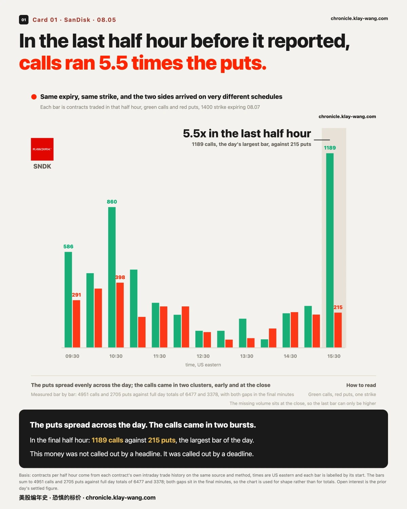
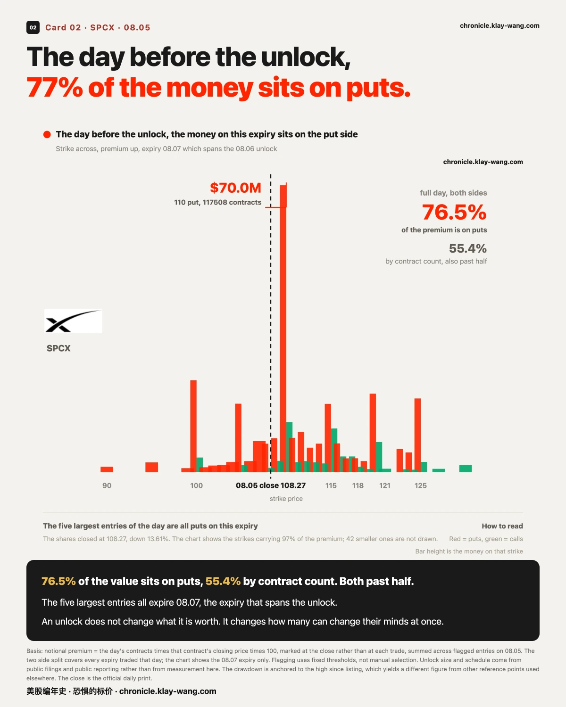
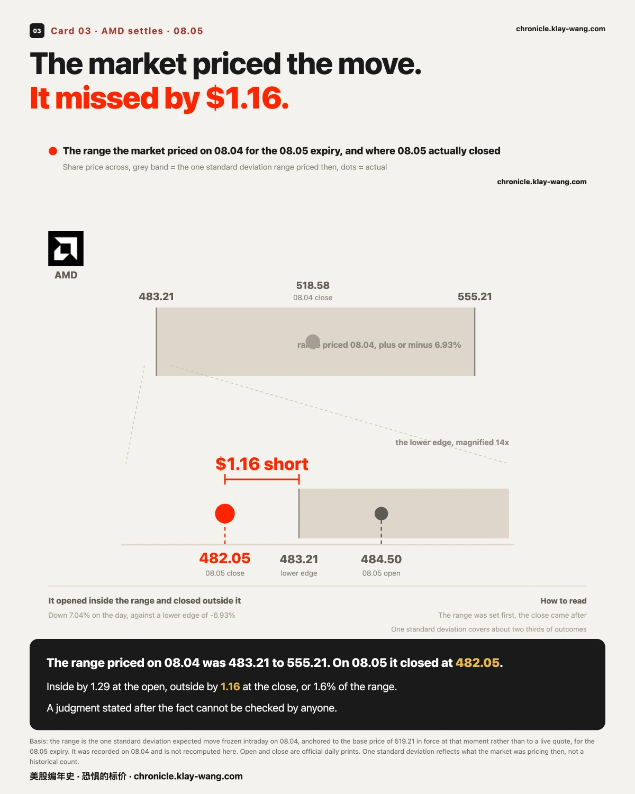
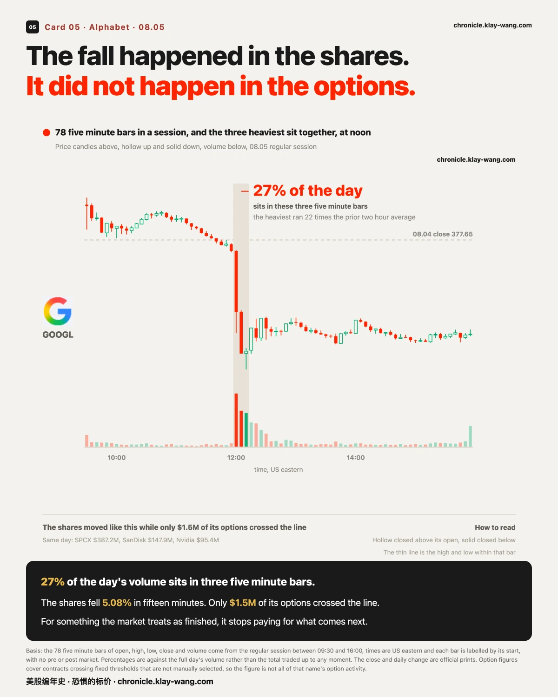

闪迪财报交卷，尾盘居然这么多看涨？· 08-05 · 8.3-8.7
SPCX faces its first post listing unlock on 08.06. On 08.05, 76.5% of its flagged premium sits on the put side, and the five largest entries of the day are all puts expiring 08.07, an expiry that spans the unlock.
Across 78 five minute bars, the three from noon account for 9.27 million shares, 27% of Alphabet's whole day, and the heaviest ran 22 times the prior two hour average. The price fell 5.08% in fifteen minutes. Only 1.5 million dollars of its options crossed the line that day. The fall happened in the shares, not in the options.
1 · The day bought one side, the last two hours bought the other
SanDisk reported after the close on 08.05, and its flagged trading that day has an unusual shape.
Up to 2:00 pm, only 3 strikes had crossed the line: 1400, 1500 and 2000, all calls. Nothing at all on the put side.
Looking back over the full day at the close, the same table holds 14 strikes: 8 calls worth 95.8 million dollars, and 6 puts worth 52.1 million. Each of those puts was under 1000 contracts at 2:00 pm, which means most of their volume arrived in the final two hours.
The largest is the 1400 put expiring 08.07: 37.6 million dollars across 3378 contracts, against open interest of just 578.
Volume at 5.8 times open interest means most of these contracts were opened that day rather than passed between existing holders. Open interest settles overnight, so 08.06 checks it: if it jumps on that strike, these were new positions; if it does not, they were opened and closed the same day. That is a test that needs no outcome, only one number.
So what is worth keeping is not a direction but the timing: for a whole session only one side crossed the line, and the other arrived in the final two hours. The last two hours before a company reports are the most information asymmetric hours of that day, and the most expensive.
The shares closed at 1350.50, down 5.40%.

What settled: the quarter beat, and the market sold the next one
The result that landed after the close splits cleanly in two.
The half that already happened came in well ahead. Revenue of 8.965 billion dollars, up 371.6%
year on year, against consensus of 8.713 billion. Non GAAP earnings of 39.25 dollars a share against
consensus of 35.45, a beat of about 11%. Gross margin of 84.6%, above the 83.6% expected.
The half that has not happened yet came in below. Revenue guidance for the coming quarter is
centred on 10.55 billion, 5.4% under the 11.148 billion consensus. Gross margin guidance is centred
on 84.0%, roughly 267 basis points under the 86.7% expected. Earnings guidance of 45.00 dollars a
share sits broadly in line with the 45.34 consensus.
The after hours print reached 1248, about 7.6% below the close. That is an after hours quote on far
thinner volume, from a different basis than the 1350.50 above, and the two are not one price path.
Put that beside the chart and the shape of the session resolves. The three strikes that crossed
the line during the day were all calls, positioned on the half that had already happened. The six put
strikes that appeared in the final two hours went on the table before the result was public. What got
sold in this report was not the quarter that ended. It was the quarter ahead.
Whether the money that came in early knew anything about the guidance is not something the trade
record shows. Only the order is certain: the money moved first, the result came second. How the market
prices the result itself is settled on 08.06, not before.

One name it carries to
Guidance below expectations weighs on sentiment across the storage group, not only on the company
reporting. Micron closed 08.05 at 893.19, essentially flat at plus 0.06%, having been up more than 3%
intraday and given all of it back. The guidance came out after its close, so 08.06 is the first
session in which it can price this at all. Added to the follow up list.
The day before the unlock, 76% of the money sits on one side
At the 08.06 open, more than nine hundred million SPCX shares become sellable. It is the first
unlock since the listing, roughly a fifth of the total, worth about 123 billion dollars at recent
prices. Musk's own six billion odd shares are not in this tranche; those stay locked until June 2027.
Dates like this are written into filings months ahead. Everyone knows they are coming.
08.05 was the last session before this one arrived.
That day, SPCX flagged trading shows 296.3 million dollars on the put side against 90.9 million on
calls, so puts are 76.5% of the premium. Measured in contracts, which does not move with price, the
figure is 55.4%. Read together: heavily tilted by value, and still past half by count. The five
largest entries of 08.05 are all puts expiring 08.07, the expiry that spans the unlock. The largest
is the 110 put: 70.0 million dollars across 117508 contracts.
One session earlier, on 08.04, the two sides of this name were close to even.
Going from an even split to roughly three to one took one trading day.
The shares closed at 108.27, down 13.61%, and 52.02% below their high since listing.
Worth noting: the price the market set for this name was not wrong. At the 08.04 close it gave a
three day range of 101.80 to 135.97, about 14.33% either way. On 08.05 the shares traded between
106.66 and 117.50, inside that range all session. The 13.61% fall was already inside the price
the day before.
An unlock does not change what a company is worth. It changes how many people can change their
minds on the same day. What it does is turn a specific date into a moment everyone is watching, and
the price on this expiry is what the market charges to carry a position across it.
The market priced the move and missed by $1.16
Before the 08.04 close, a sentence about AMD was written down: it would land between 483.21 and
555.21 the next session.
The sentence was not written by an analyst. It was written by the whole option chain. It is one
standard deviation, which is to say that on the pricing of that moment, roughly two thirds of
outcomes fall inside it. The number froze on 08.04 and cannot be edited afterwards.
AMD opened 08.05 at 484.50, inside the lower edge by 1.29 dollars. It closed at 482.05, outside it
by 1.16.
In a single session it brushed the same line twice, once from within and once from without.
It fell 7.04% on the day against a line drawn at 6.93%.
Landing outside does not mean the price was wrong. One standard deviation is defined to be breached
about a third of the time. What carries information is the size of the miss:
$1.16, or 1.6% of a range 72 dollars wide.
Put another way, the price the market set for AMD's first session after reporting landed almost
exactly where the session went, and then slipped past the line at the very end. Whoever paid for a
strike inside that range and whoever collected on one ended the day on opposite sides.
Which is the only reason the range gets written down in advance: a judgment stated after the fact
cannot be checked by anyone.
Three days of soft labour data, and the price of cover did not move
Two sessions, three separate sources, one direction.
On 08.04, job openings came in below expectations. On 08.05 at 08:15, ADP private payrolls added
44,000 against an expected 68,000 and a prior 98,000. Two hours later the employment component of
the services purchasing managers index printed 47.4 against a prior 51.2, below the line that
separates expansion from contraction. In the same report, prices paid rose from 67.7 to 70.3.
Three different agencies, three different methodologies, one direction. Payrolls settle it on 08.07.
The reaction is worth recording. In the minute after ADP, the S&P 500 tracker barely moved. After
the open it reached 776.85, an all time high, then gave it back through the session and closed at
769.79, down 0.20%. On the day it set a record, it closed lower.
One line for the split: the macro data disappointed three times running, and the price of cover
did not rise. The one year reading was 68 on 08.04 and 64 on 08.05, four points lower.
Both things hold at once only if the market treats these releases as already known, and reserves
its uncertainty for the payrolls print on 08.07.
One session, and the lean runs across 76.5 points
Splitting 08.05 flagged trading by name, the share of premium sitting on the put side runs:
SPCX 76.5%, AMD 52.8%, SanDisk 35.2%, Nvidia 12.8%, Amazon 3.5%, Micron 1.2%, Apple 0.0%.
Same session, same open market, and the most lopsided name differs from the least by 76.5 points.
The easiest way to misread this table is as a sentiment poll. It is not one. It records where the
money sits, and the shape itself carries a price: when almost all of a name's money sits on one
side, the market is paying far more for one direction than the other; when the two are close to
even, it is paying no premium for either.
One more thing follows from the table. Of the 17 names tracked here, exactly one rose more than 1%
on 08.05, Nvidia at 3.43%, and it also carries the fourth lowest put share on this list. Everything
else either barely moved or sat in the lower half.
This was not a broad selloff. It was the market pricing each name separately, and arriving at
prices very far apart. That is not anyone guessing up or down. That is the market putting a price
on how sure it is.
(Basis: only names with at least 10 million dollars across both sides are kept. Thin samples produce
ratios near zero or one hundred that reflect sample size rather than market structure.)
5 · The fall happened in the shares, not in the options
The 08.05 regular session held 78 five minute bars and 34.51 million shares. The three from noon account for 9.27 million of them, 27% of the day; the heaviest alone is 11.6% and ran 22 times the average of the prior two hours.
The price fell from 375.88 at the 11:55 close to a low of 356.77 in the 12:10 bar, 5.08% in fifteen minutes, and finished at 362.46, down 4.03% on the day.
On the same day, only 1.5 million dollars of its options crossed the day's flagging line. For comparison, on the same table: SPCX 387 million, SanDisk 148 million, Nvidia 95.4 million.
This is the one item here with no premium to discuss, which is exactly why it is worth discussing.
The other names in this issue moved in the options first. Someone paid at a strike on an expiry, and the shares followed. Alphabet ran the other way: the money hit the stock directly and the options barely responded.
The absence is itself a reading. When the market treats something as already finished, it stops paying for the possibility of what comes next. Cover is bought for an uncertain future, not for a settled past.
The timing of those bars matches the time carried in public reporting: a leadership change in the AI division and several model leads departing, all landing the same day.
Thermometer
64 out of 100, on the expensive side. One year implied volatility sits at the 64th percentile
of the past three years, which is to say the market is pricing a year of uncertainty more dearly
today than on 64% of trading days over that span. Across windows: 64 over three years,
41 over five, 50 over the full history. All three shown, none hidden.
The term ladder climbs from 13.79 at nine days to 22.67 at one year: calm up close, costly far out.
What you actually pay for a long dated option is that rightmost point.
It read 68 on 08.04, so the number came down by four.
Fear-Price Index by Market Chronicle · Aug 5, 2026 · 64/100: one-year implied volatility (VIX1Y) at 22.67, the 64th percentile of the past three years. Higher means pricier. Daily ledger & methodology → chronicle.klay-wang.com · Cite as: Fear-Price Index, Market Chronicle

Two things you can check for yourself on 08.06
Whether those 3378 SanDisk 1400 puts were really newly opened. Open interest settles
overnight, so the answer exists at the 08.06 open: a jump means new positions, no jump means
opened and closed the same session. The chapter titled yesterday's money, still there today
updates daily; look up that one strike.
Whether the money stays on one side of SPCX once the unlock actually opens. The 08.07 expiry
spans the unlock date, and the largest-trades board refreshes every session, so whether it is still
there, and still on the same side, is visible at a glance.
Options activity, name by name → chronicle.klay-wang.com/options
The thermometer and both ledgers → chronicle.klay-wang.com
Both pages update automatically after each close, carry their date, and cannot be edited afterwards.



No investment advice. No direction calls. No market timing.